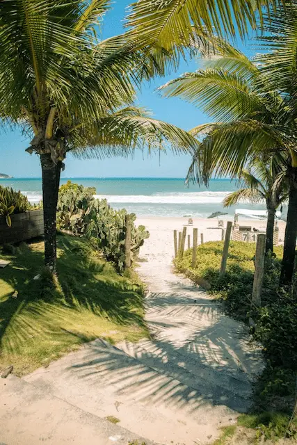

Dados do local
- País:
- Brasil
- Capital:
- Brasília
- Estado:
- Santa Catarina
- Localidade:
- Florianópolis
- Idioma:
- Português
- Moeda:
- Real (R$)
- Continente:
- América do Sul
Clima
Temperatura: 8 °C
Vento: 10 km/h
Sensação térmica: N/A
Florianópolis, Santa Catarina

Temperatura: 8 °C
Vento: 10 km/h
Sensação térmica: N/A